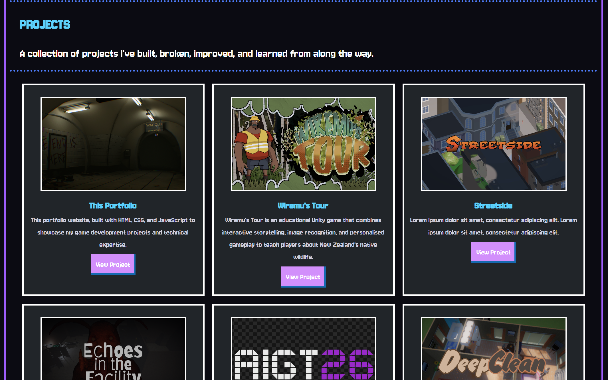
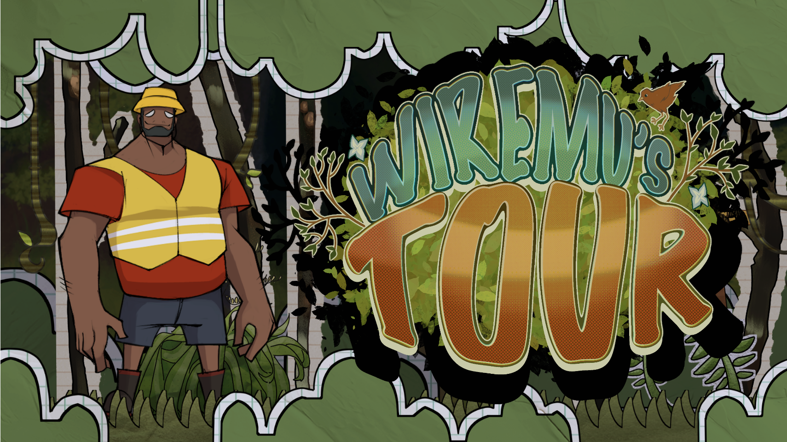
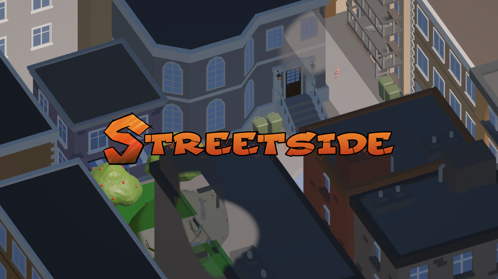
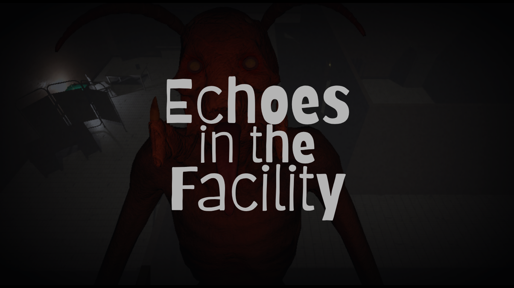
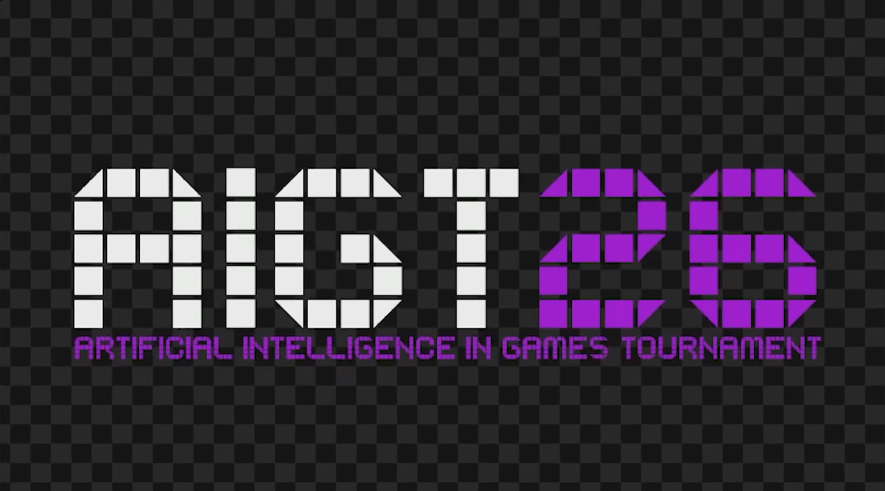
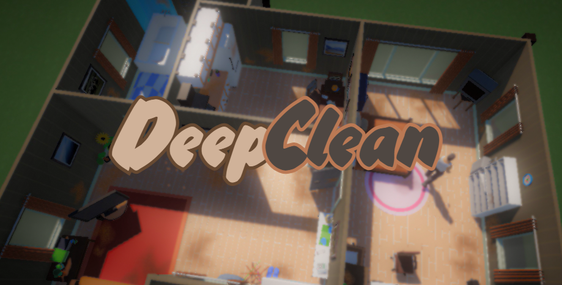
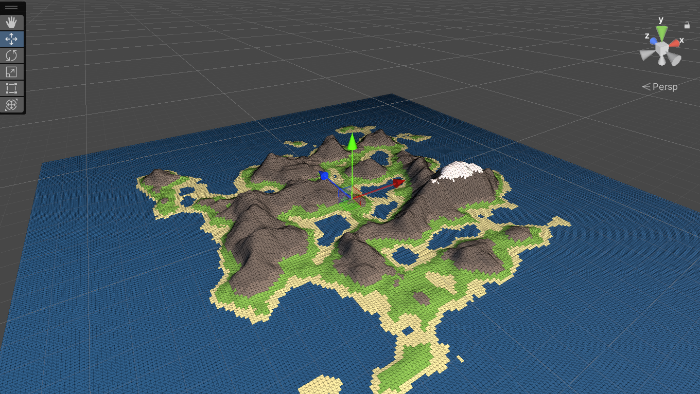

PROJECTS
A collection of projects I've built, broken, improved, and learned from along the way.

This Portfolio
A retro-inspired portfolio website built from scratch with HTML, CSS, and JavaScript to showcase my game development projects and technical skills.
View Project
Wiremu's Tour
An educational interactive experience that teaches children about New Zealands native wildlife through engaging storytelling and exploration.
View Project
Streetside
A fast-paced two-player co-op puzzle game where players work together to solve city puzzles and tag graffiti spots.
View Project
Echoes in the Facility
A third-person stealth horror game featuring a sound-reactive enemy AI built using a modular finite state machine.
View Project
AI Car Racer
An autonomous racing AI developed for a competitive programming tournament, placing 5th out of 20 competitors.
View Project
Deep Clean
A first-person psychological mystery that blends cleaning simulation with investigation and risk-reward gameplay.
View Project
Procedural Generation
A technical prototype exploring procedural terrain and maze generation using algorithms such as Perlin Noise and Depth-First Search.
View Project
Coalesce
An environmental narrative experience that uses immersive audio and atmospheric storytelling to explore a post-apocalyptic London Underground station.
View Project